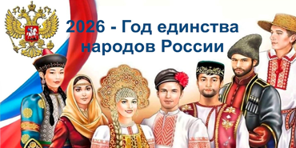
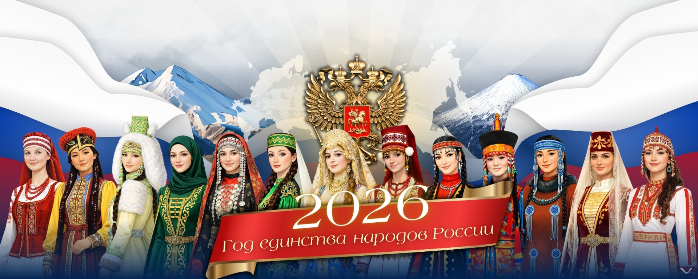
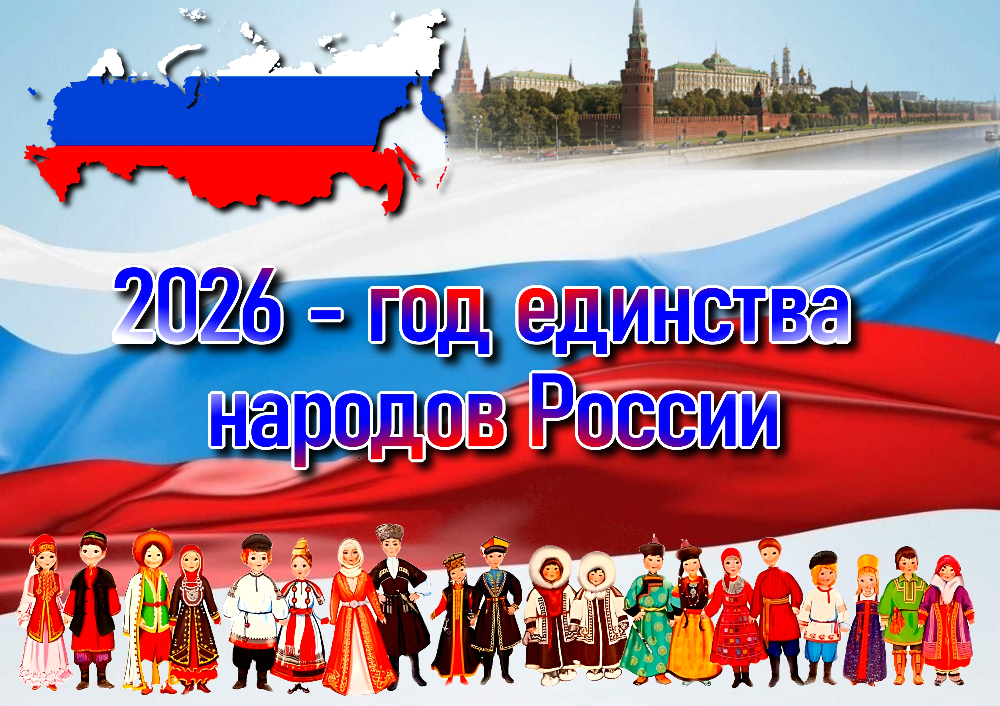

Регион, где проживают представители 160 народов, станет одной из ключевых площадок реализации инициатив. Культурные традиции здесь поддерживают свыше 100 национально-культурных объединений. В 2026 году область примет крупное федеральное событие – Всероссийский форум «Россия – Дом народов».

Дворец молодёжи как флагман дополнительного образования региона включил в программу мероприятий на 2026-й события, посвященные Году единства народов России. В их числе – Фестиваль Урал объединяет народы и Областной конкурс национальных культур Национальное подворье, которые проходят в рамках проекта «Урал многонациональный», Областной краеведческий конкурс-форум «Уральский характер», региональный этап олимпиады по родным языкам и литературе (татарский, марийский) школьников Свердловской области, организатором которых выступает Региональный центр детско-юношеского туризма и краеведения Свердловской области. Подразделения Дворца молодёжи готовят лекции, мастер-классы и различные события, посвященные Году единства народов России.
Для Дворца молодёжи, который исторически является точкой притяжения для тысяч активных, талантливых самых разных ребят, эта тема – наша естественная среда.
Мы каждый день видим, как в совместных проектах, на фестивалях и в конкурсах стираются барьеры, а различие культур становится мощным ресурсом для новых идей
и решений. Мы говорим с молодёжью на понятном ей языке интерактивных форматов, цифровых проектов, искусства и добровольческих инициатив. Важно, чтобы каждый
ребёнок и подросток, независимо от его корней, чувствовал: его голос важен, его история – часть общей большой истории страны,
– прокомментировал Александр Слизько,
директор Дворца молодёжи.

Инициатива, ранее предложенная атаманом Всероссийского казачьего общества Виталием Кузнецовым на заседании Совета по межнациональным отношениям, получила высший статус и определит общегосударственную повестку.
Стратегическая задача предстоящего Года – укрепление межнационального согласия, дружеских связей и взаимопонимания между всеми этносами многонациональной страны. В основе политики – принцип сочетания: сохранение уникальной самобытности каждого народа при безусловном укреплении общероссийской гражданской идентичности.